Designer (me) + Product Manager
March 2021 - Apr 2021
Triyo is a Toronto-based startup that builds project and task management software catered to users in the finance industry.
By integrating the Microsoft Suite into their software, Triyo allows project teams to collaborate on files without excessive change management.
A file collaboration task is created when project managers assign a section of a Word document to team members to edit or approve.
Currently, project managers upload Word documents to the Triyo web application and assign sections that are edited online.
Recently, Triyo launched a Word add-in, which means assignees can edit their sections offline.
Stakeholders brought to our attention that the code used support the online editor was expensive and difficult to maintain. They would like to direct users to the new Word add-in for offline edits and remove online editing from the application.
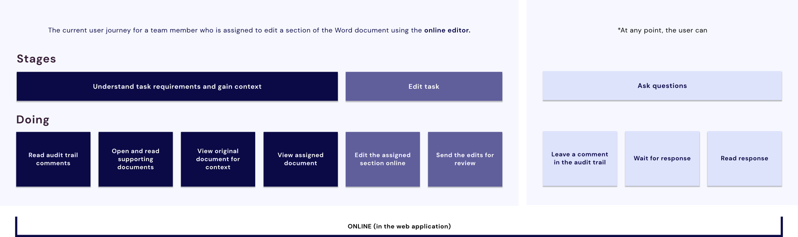
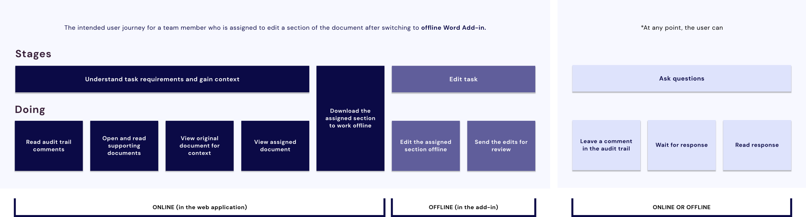
A. Provide users with task requirements and context
B. Record questions and answers between team members
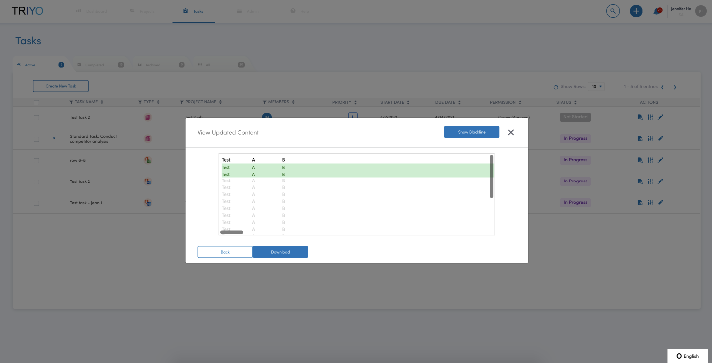
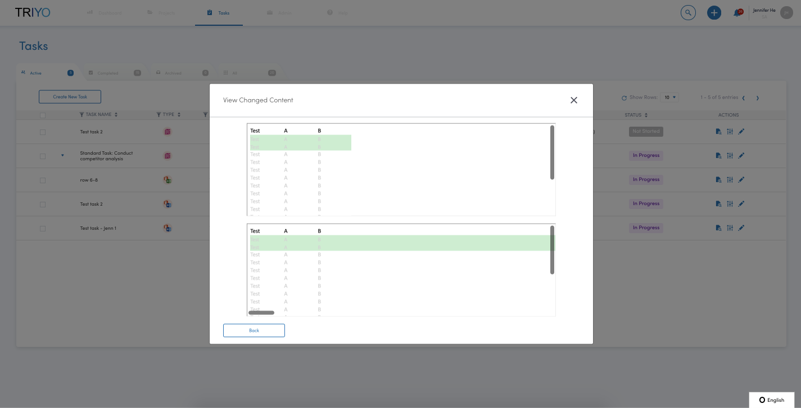
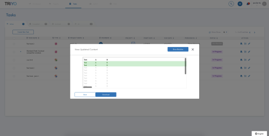
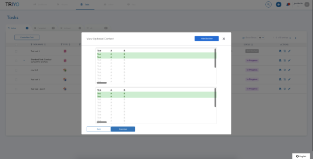
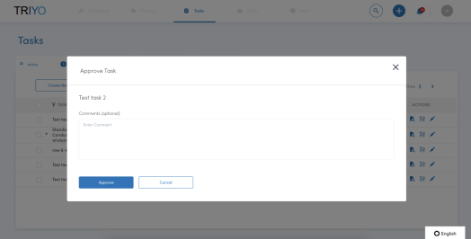
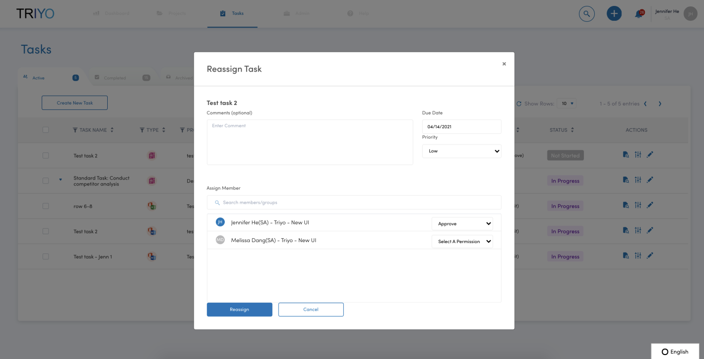
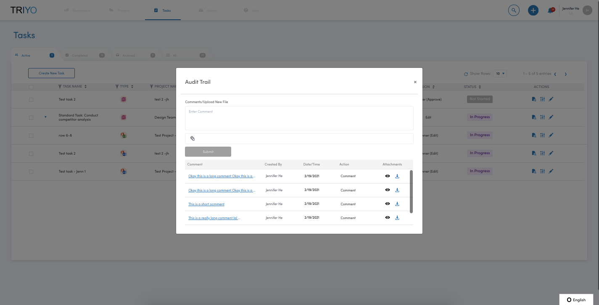
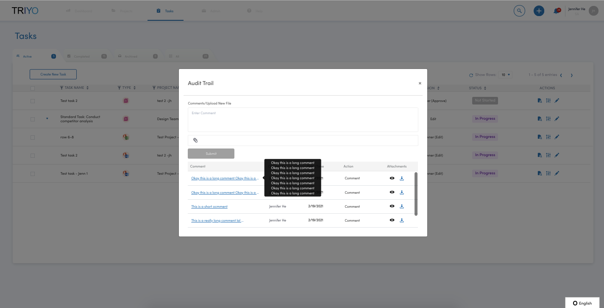
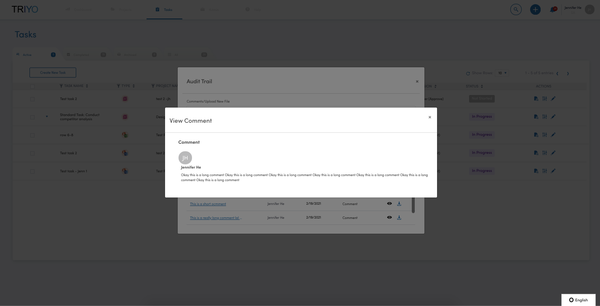
Too many modals disrupt the user journey and lead to repetitive back-and-forth actions.
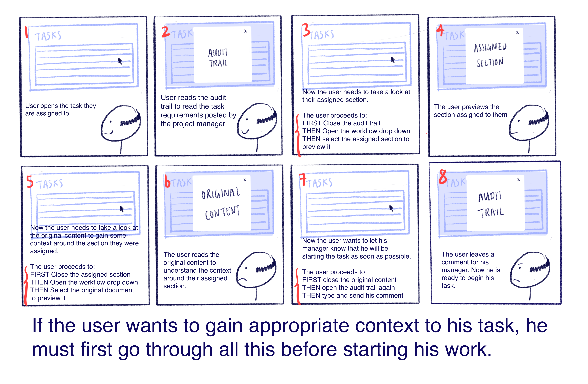
Centralize task management on the web application
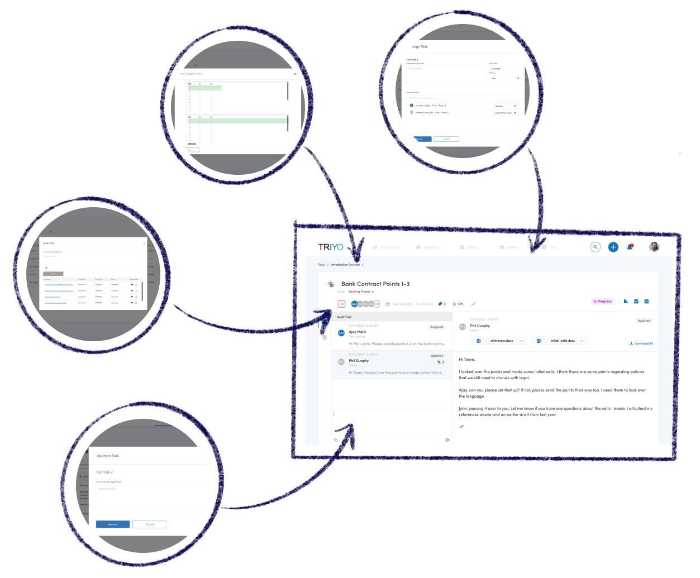
Audit Trail comments are long. Triyo is integrated with email, which means project managers can send task instructions over email, which means comments can be entire paragraphs.
Project managers will send attachments over the audit trail with reference material, which means users should be able open attachments to preview them for reference.
Expandable comment cards. Show more/show less toggles between full and truncated comment.
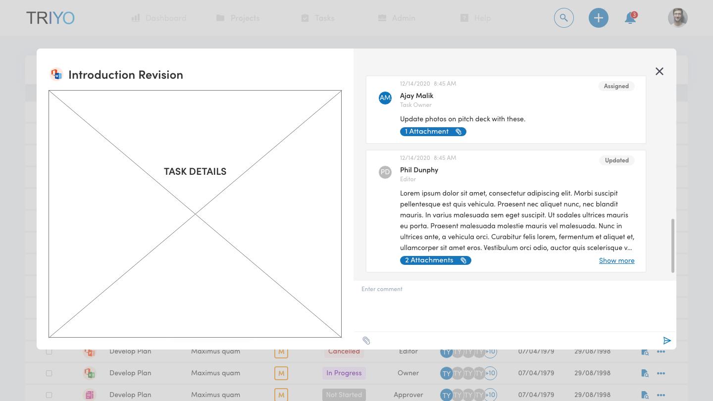
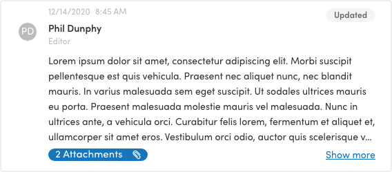
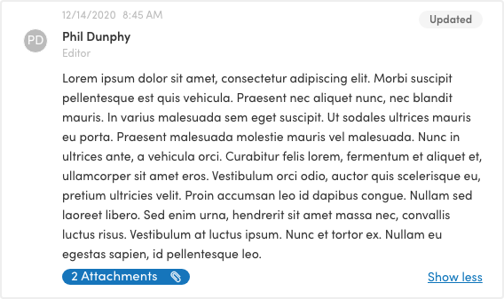
Comment cards expand into entire screen.
✅
Comments and attachments can be viewed simultaneously. Each comment is treated as its own message, like opening an email, which is familiar for our users.
❌
The transition between cards into the full screen is jarring. It is not a common UI pattern so users do not know what to expect on-click.
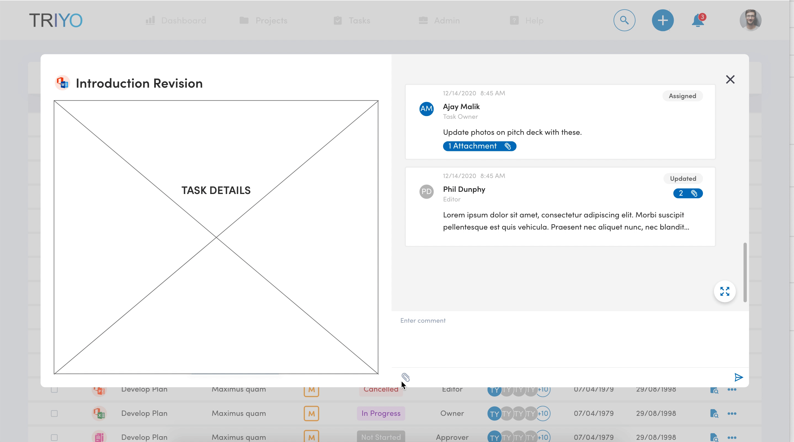
Outlook-inspired design.
✅
Our users are familiar with the UI of Outlook and the interaction of clicking on an email to view the entire message.
✅
Comment expands from left to right instead of right to left (like in previous iterations), which follows conventions.
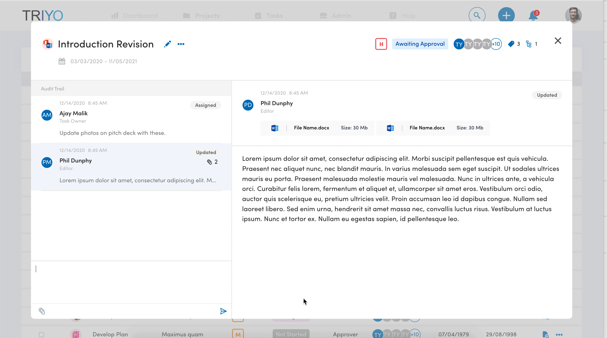
There are four versions of a document: the assigned content, original content, changed content and updated content.
When users view the updated content, they must also be able to see changes made to the document and compare the two versions, spliting the screen into two halves.
✅
Tabs to switch between each version of the document within the same window.
❌
Icons are not intuitive. Even if users grow accustomed to these icons, there will be additional processing time required to retrieve interpretation from memory, which disrupts the user journey.
❌
Split screen opens from right to left, which is not conventional.
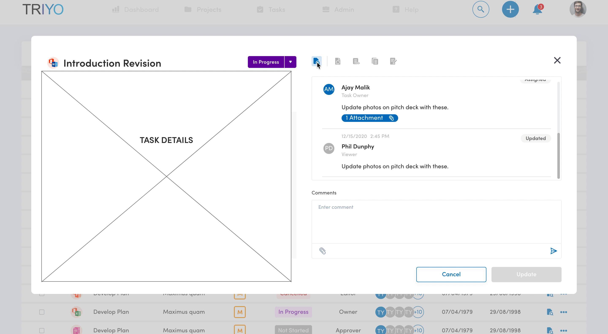
✅
Tabs to switch between each version of the document within the same window.
✅
Tabs are labelled.
❌
Split screen will still open from right to left, which is not conventional.
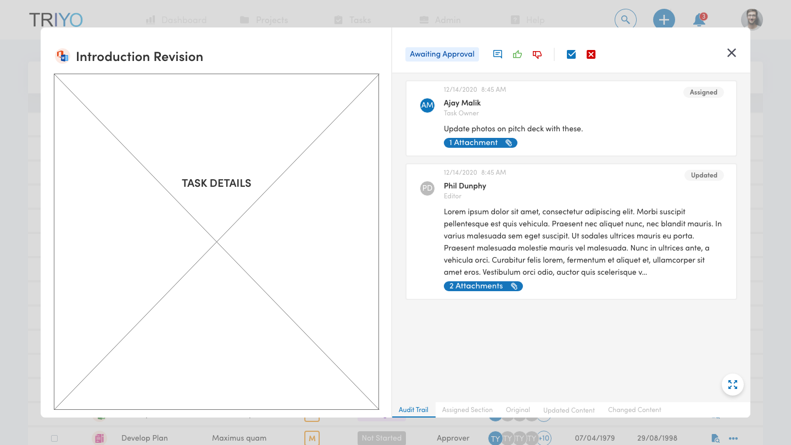
✅
Tabs to switch between each version of the document within the same window.
✅
Audit trail static on left. Users can make comments or ask questions while simultaneously viewing their assignment, centralizing the user journey.
❌
Icons are not intuitive but are larger. Hover states can be added to aid interpretation.
❌
Split screen?
❌
Audit trail on left is associated with audit trail on right, but tabs through the center cut through this association.
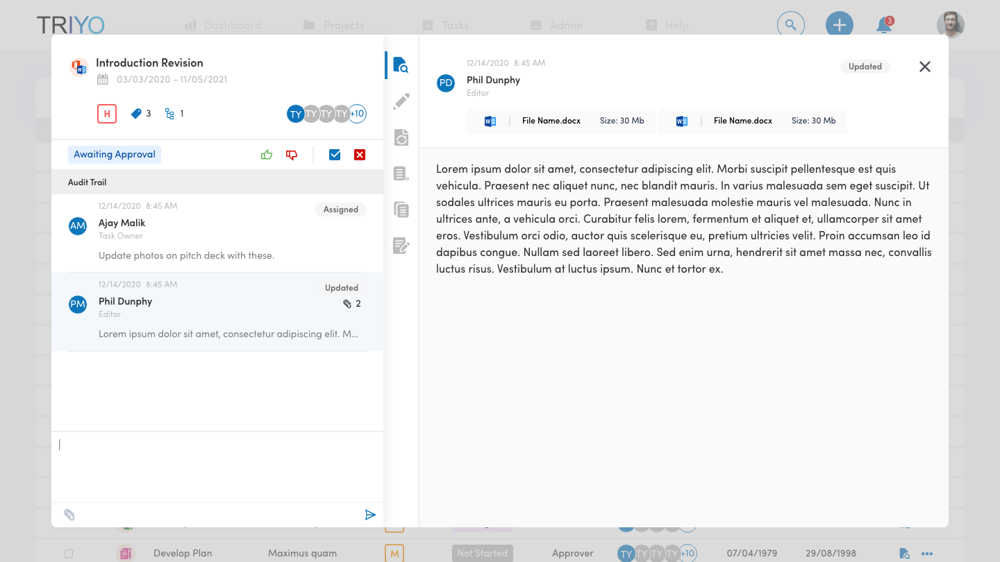
✅
Tabs to switch between each version of the document within the same window.
✅
Users can make comments or ask questions while simultaneously viewing their assignment, centralizing the user journey.
✅
Tabs are labelled
✅
Split opens from left to right, as is conventional.
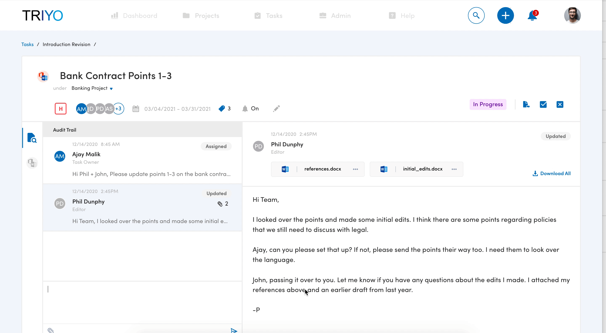
Iterate based on user feedback
Support developers in build
Business goals were the inception for this project, but they can always be aligned with a better user experience. For this project, it was important to frame business goals with the user journey. Doing so opened up an opportunity for better UX within the product.
Working in a startup environment meant two-week sprints to research, define, and ideate. At the same time, I found demoing multiple design options to stakeholders often led to more engaging conversations. I learned to prototype quickly and be less restricting with my design options in order to encourage these types of discussions during early morning design reviews.
💙 Jennifer
© Coded with 💙 by jennyfurhe